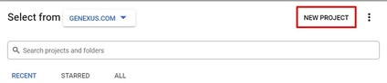
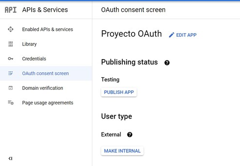
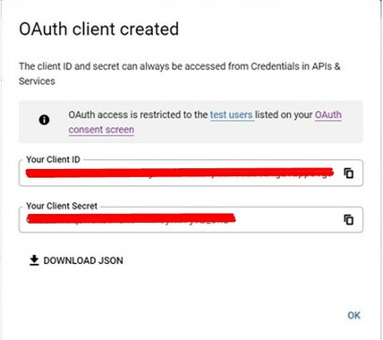
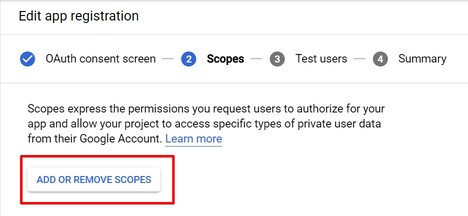
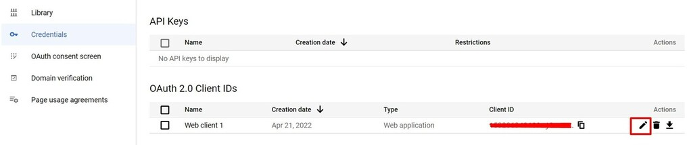
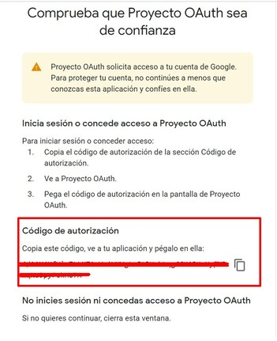
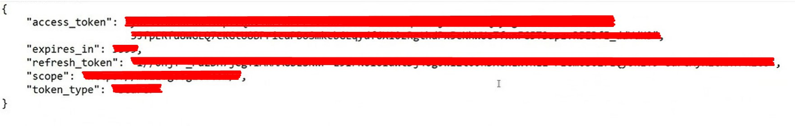
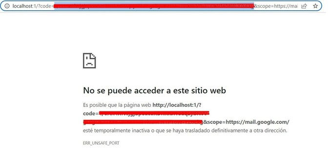

In this article, you will find the necessary steps to provide data to connect to the mailbox through Google OAuth 2.0.
Example: Application administrators have to provide the necessary data to programmers so that they can connect to their mailboxes.
Follow these steps to provide data to connect to a mailbox with Google OAuth 2.0:
1. Enter this link: https://console.developers.google.com/apis/credentials.
2. Create a New Project:

Name it and click on "Create".
Once you have created the New Project, select it in order to work with it.
3. Go to the OAuth Consent screen option in the left menu and Configure a OAuth consent.
To do so, follow the next steps:

4. Go to the Credentials option in the left menu and click on the + Create Credentials. Then select OAuth client ID.
5. Select the application type necessary for your project. Since, in this example, the focus is on the process for emails, it is common to use "Application type = Web application" or "Application type = Desktop app." Then click on the Create button.
6. Now the OAuth client has been created:

Save the ClientId and ClientSecret that will be used later.
7. Go to the Library option in the Google Cloud Platform and search for the Gmail API (use the search engine to help you out) and enable it.
8. Go back to the OAuth consent screen option, where you will have to enter the scope of the Gmail API app that you just activated in the previous step. For this, click on the Edit App button to enter the form.
9. In the Scopes section, add the necessary scope to be able to use the email services with Google. To do so, press the Add or remove scopes button as shown in the image:

10. Select "https://mail.google.com/" and click on the Update button.
11. For this step, you don't need to stay on the Google Cloud Console. It is necessary to make a GET request to a URL. For simplicity, it is recommended to do it from the browser.
The URL is constructed as follows:
Where:
Notes:

https://accounts.google.com/o/oauth2/auth?client_id=xxx.apps.googleusercontent.com&redirect_uri=urn:ietf:wg:oauth:2.0:oob&scope=https://mail.google.com/&response_type=code
After having made the request in the previous step, an Authorization Code will be obtained as shown in the image below. This code is necessary for the following steps.

Next, it is necessary to make a POST request, where the Authorization Code obtained in the previous step is used.
As shown in the image in Curl format below, you have to make a request to the https://accounts.google.com/o/oauth2/token URL. Also, you need to pass, using x-www-form-urlencoded format (which must be specified as the value for the Content-Type header), the keys with their corresponding values:
curl -X POST https://accounts.google.com/o/oauth2/token -H "Content-Type: application/x-www-form-urlencoded" -d "client_id=xxx&client_secret=xxx&code=xxx&grant_type=authorization_code&redirect_uri=xxx"
Note: Take into account that the previous POST request must be written as shown on a single line.
The response obtained after executing the previous request is as follows:

As you can see in this last answer, the refresh token is already obtained (in addition, the first active access token is also obtained, which can already be used by the programmer).
The next step would be to pass the Client ID, Client Secret, and Refresh Token to the programmer.
He/she will be in charge of calculating the access tokens when they expire, using the three recently mentioned metadata.
https://accounts.google.com/o/oauth2/auth?client_id=xxx-xxx.apps.googleusercontent.com&redirect_uri=http://localhost:1&scope=https://mail.google.com/&response_type=code&access_type=offline
If you request the Authorization Code of a Web Application, you have to copy the code from the browser as shown in this image:

Next, it is necessary to make a POST request, where the Authorization Code obtained in the previous step is used.
As shown in the image in Curl format below, you have to make a request to the https://accounts.google.com/o/oauth2/token URL. Also, you need to pass, using x-www-form-urlencoded format (which must be specified as the value for the Content-Type header), the keys with their corresponding values:
curl -X POST https://accounts.google.com/o/oauth2/token -H "Content-Type: application/x-www-form-urlencoded" -d "client_id=xxx&client_secret=xxx&code=xxx&grant_type=authorization_code&redirect_uri=xxx"
The response obtained after executing the previous request is as follows:
As you can see in this last answer, the refresh token is already obtained (in addition, the first active access token is also obtained, which can already be used by the programmer).
The next step would be to pass the Client ID, Client Secret, and Refresh Token to the programmer.
He/she will be in charge of calculating the access tokens when they expire, using the three recently mentioned metadata.
Special considerations for SMTPSession or Pop3Session with Google Accounts
Microsoft Exchange OAuth 2.0 for Mails
OAuth Module
| Backlinks | |
| Microsoft Exchange OAuth 2.0 for emails: Generation and data collection from the Administrator | OAuth Module |